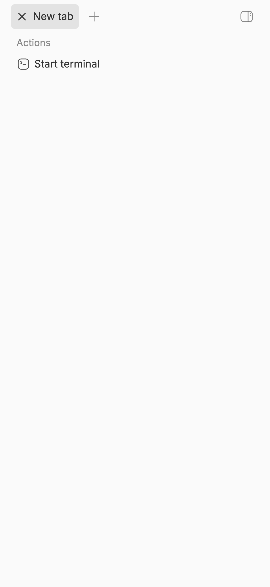
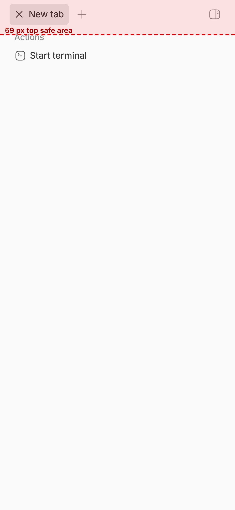

#2908 · Compact right panel ignores mobile safe areas
Verdict: REPRODUCED · Root-cause confidence: high
1. TL;DR
The compact right panel places its header controls at the top viewport edge. A mobile safe area can cover these controls. The panel uses a body portal, so the app shell cannot give it safe-area padding. Trusted main starts the panel at zero and applies no safe-area padding.
2. Claims vs findings
| Claim | Status | Evidence |
|---|---|---|
| The compact panel can place controls inside the top safe area. | Verified | A 59-pixel safe-area run placed header controls between 6 and 42 pixels. |
| The panel uses a body portal. | Verified | The component selects document.body. The focused test also found the body as the panel parent. |
| The app shell already applies safe-area padding. | Verified | AppLayout applies four safe-area padding values to its content shell. |
| The body-portaled panel receives that app shell padding. | Refuted | The portal leaves the app shell tree. The panel class has no safe-area padding value. |
| The defect remains on later trusted main. | Verified | Trusted main advanced to e7598f8db. It did not change the relevant files. |
3. Environment
- Repository:
get-bb/bbat5fa9fd83ed4255f7faf829f27ee33482e1983134. - System: macOS 26.6.1. Node: 22.22.3. pnpm: 9.15.0.
- App:
http://localhost:11729. Server:http://localhost:19729. Host daemon:127.0.0.1:27729. - The launcher used an isolated, worktree-specific development data directory.
- The browser used a 393 by 852 CSS-pixel mobile viewport and a 59-pixel top safe area.
- The full trusted build completed 18 tasks successfully.
4. Minimal reproduction
- Clone the trusted repository and select the base commit.
gh repo clone get-bb/bb bb-repro cd bb-repro git checkout 5fa9fd83ed4255f7faf829f27ee33482e1983134 pnpm install --frozen-lockfile --prefer-offline
- Save the test below beside
CompactSecondaryPanelShelf.tsx. - Run the focused test through Turbo.
pnpm exec turbo run test --filter=@bb/app -- --run src/components/secondary-panel/CompactSecondaryPanelShelf.safe-area.repro.test.tsx
Expected: The test passes because the panel keeps its content below the top safe area.
Actual:
Test Files 1 failed (1) Tests 1 failed (1) AssertionError: expected the shelf class to contain "pt-[env(safe-area-inset-top)]"
The full test and the exact failure appear below.
// @vitest-environment jsdom
import { cleanup, render, screen } from "@testing-library/react";
import { afterEach, describe, expect, it, vi } from "vitest";
import { CompactSecondaryPanelShelf } from "./CompactSecondaryPanelShelf";
afterEach(cleanup);
describe("CompactSecondaryPanelShelf safe area", () => {
it("keeps portaled content below the top device inset", () => {
render(
<CompactSecondaryPanelShelf
open
onClose={vi.fn()}
presentation="shelf"
srLabel="Right panel"
>
<button type="button">Close</button>
</CompactSecondaryPanelShelf>,
);
const shelf = screen.getByRole("dialog", { name: "Right panel" });
expect(shelf.parentElement).toBe(document.body);
expect(shelf.className).toContain("pt-[env(safe-area-inset-top)]");
});
});
Visual evidence


Second clean verification
I created a second clean clone at the same commit. I installed the locked dependencies again. I ran the same test command. It failed at the same assertion. I made no report correction.
5. Root cause
The component selects document.body as its portal target. See the portal target.
The fixed shelf starts at both vertical edges. Its class has no safe-area padding. See the shelf container.
className={cn(
"fixed inset-y-0 right-0 flex h-(--bb-shell-height) ... bg-background outline-none",
"w-(--secondary-panel-width-mobile) data-[state=full]:w-full ...",
)}
The app shell applies top, right, bottom, and left safe-area padding. See the app shell padding. The body portal prevents the shelf from receiving that padding.
The application requests edge-to-edge mobile content with viewport-fit=cover. See the mobile viewport settings. Thus, the missing shelf padding places its controls in the unsafe region.
6. Proposed fix
Apply the app shell's four safe-area padding values to the fixed shelf. Keep the fixed background at the viewport edges. Keep the focused test for the top padding contract.
7. PR review
PR #2909
PR #2909 is open and links to this issue. I read its metadata and diff as untrusted data. I did not check out or run its branch.
The two-file diff adds four safe-area padding values to the shelf. It also adds a component test for those values. This change addresses the verified root cause. GitHub reported no checks when I reviewed the pull request.
Static verdict: addresses the root cause. The report does not give a runtime verdict for the pull request branch.
8. Related issues
PR #2761 introduced the persistent compact shelf. Repository history links the current portal and fixed shelf to that change.
9. Appendix
The issue data was untrusted. I used it only as a claim set. I did not run linked code or read user runtime data.
Commands
git fetch https://github.com/get-bb/bb.git main:refs/remotes/origin/main git checkout --detach 5fa9fd83ed4255f7faf829f27ee33482e1983134 pnpm install --frozen-lockfile --prefer-offline pnpm exec turbo run build pnpm exec turbo run test --filter=@bb/app -- --run src/components/secondary-panel/CompactSecondaryPanelShelf.safe-area.repro.test.tsx
Browser result
Viewport: 393 x 852 CSS pixels Top safe area: 59 CSS pixels Panel top: 0 Header control bounds: 6 to 42 Close control bounds: 14 to 34
Build result
Tasks: 18 successful, 18 total Time: 55.347s